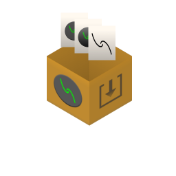

Aerracen Media Logos and Branding
Aerracen Media Logos and Branding
Aerracen Media Logos and Branding

The aerracen is a symbol composed of two lines swirling towards each other, but not touching.
The first line starts in the top left corner and bends towards the center finishing at a slight right offset from the center.
The other line is the same as the first, but inverted.
As previously stated, the aerracen is the name of a symbol, meaning its free for personal and commercial use.
The logo used by Aerracen Media is essentually an aerracen with a circle around it.
Besides the logo being a single color the Aerracen Media logo should always have a green, glowing aerracen;
This is color diffrent is the main attribute that makes the Aerracen Media logo unique.
You cannot claim the Aerracen Media as your own, but you can use it for the purposes of our brand recognition.

Download Logos